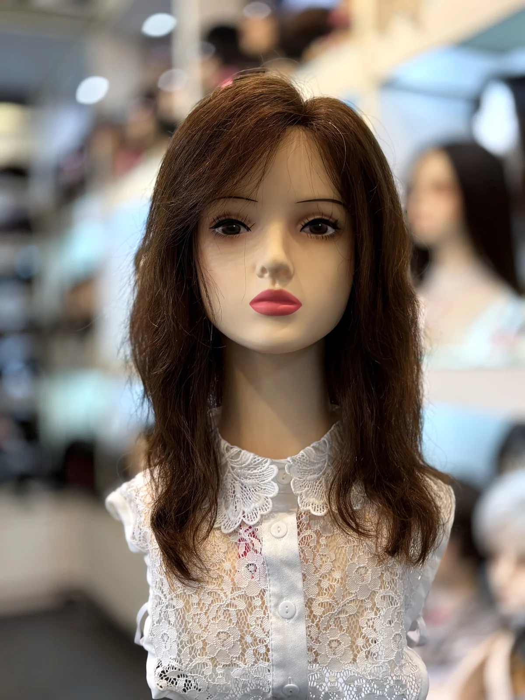
化療後／醫療用假髮
每天長時間配戴，現場比較底網材質
化療、疤痕脫髮、壓力症候群掉髮等，需要每天長時間配戴的朋友。阻燃絲、冰絲網等材質，可現場試戴比較。
了解更多自2004在現址
台北後站・鄭州路23號
哈髮科技假髮從 2004 年起，就在台北後站鄭州路。
我自己也戴假髮，到現在大約二十年。
— 設計師 賈斯汀（Justin）
自 2004 年在鄭州路現址・Google 評論 4.9★
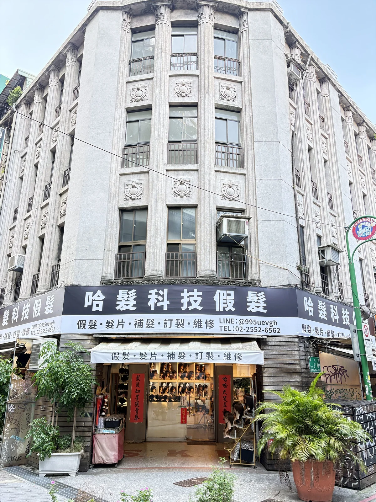
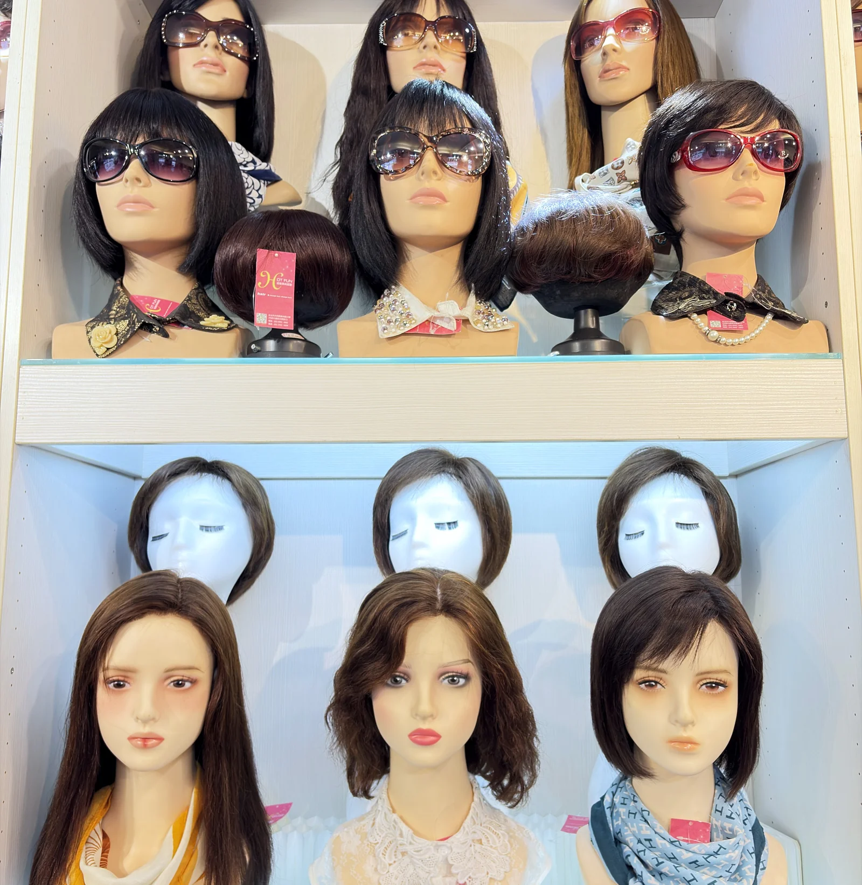
HOT FUN HAIR
讓假髮，融入日常生活的一部份。
台北地下街 Y13 出口搭電扶梯上來，穿過小公園約 30 秒就到，很近。
二十年來，哈髮科技假髮一直秉持著「讓假髮融入日常生活的一部份」這個目標。髮型能改變心情，也能找回自信。
我是假髮設計師賈斯汀（Justin）。每一位客人我都會一對一聽你的需求，幫你挑一頂戴得舒服、看起來自然的假髮，讓假髮一點都不「假」。
「哈髮 hotfun hair」取自台語「哈桃鬃」的發音。
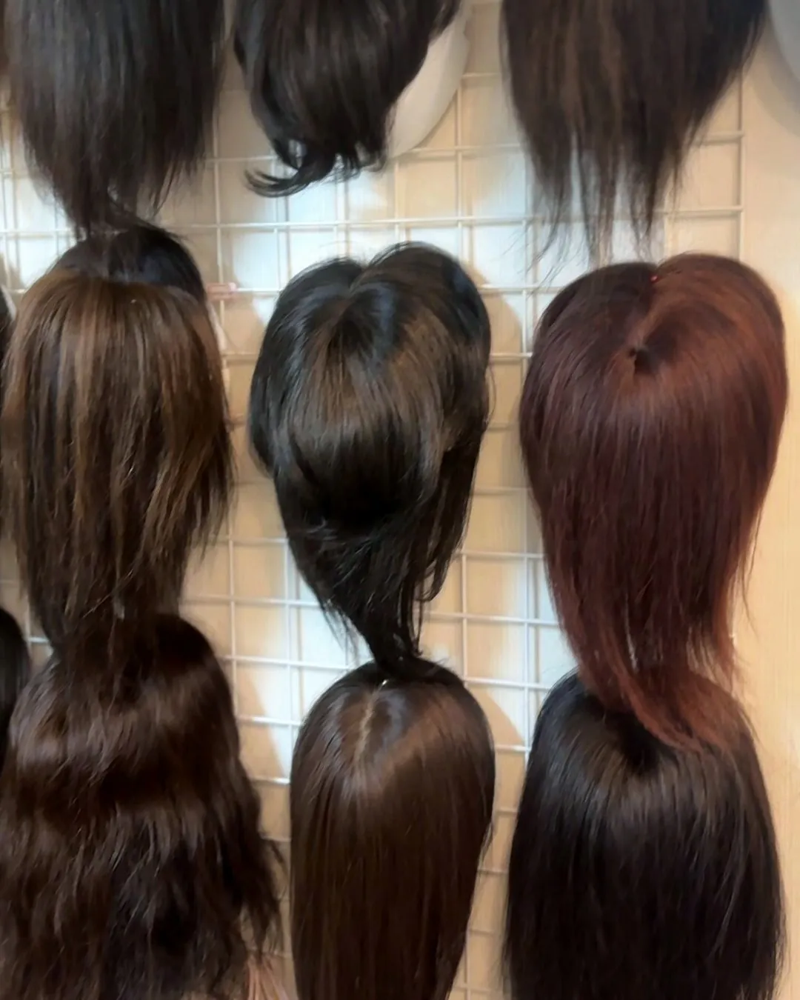
歡迎現場試戴比較，建議先預約，設計師一對一服務。

每天長時間配戴，現場比較底網材質
化療、疤痕脫髮、壓力症候群掉髮等，需要每天長時間配戴的朋友。阻燃絲、冰絲網等材質，可現場試戴比較。
了解更多
補髮片或整頂假髮，手工製作，需要時間
髮際線後退、頭頂稀疏，可選補髮片或整頂假髮。設計師依落髮範圍建議，修剪成自然髮流。手工製作，需要時間。
了解更多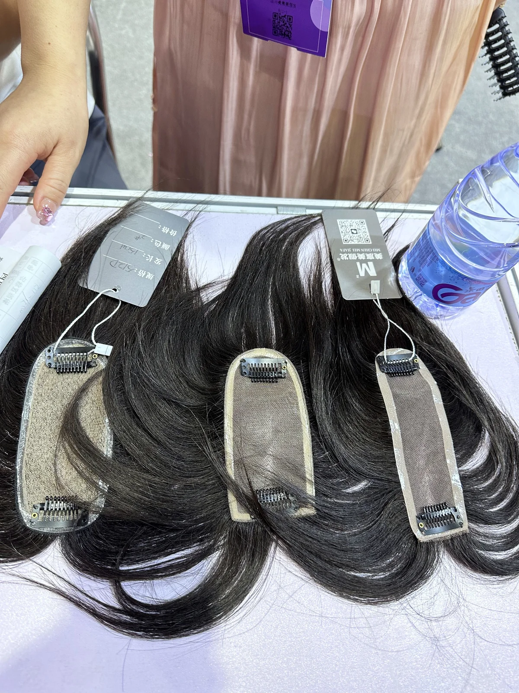
頭頂變稀、遮白髮的局部髮片
頭頂變稀、髮縫變寬，或想遮白髮又不傷真髮，可選局部髮片或整頂假髮。
了解更多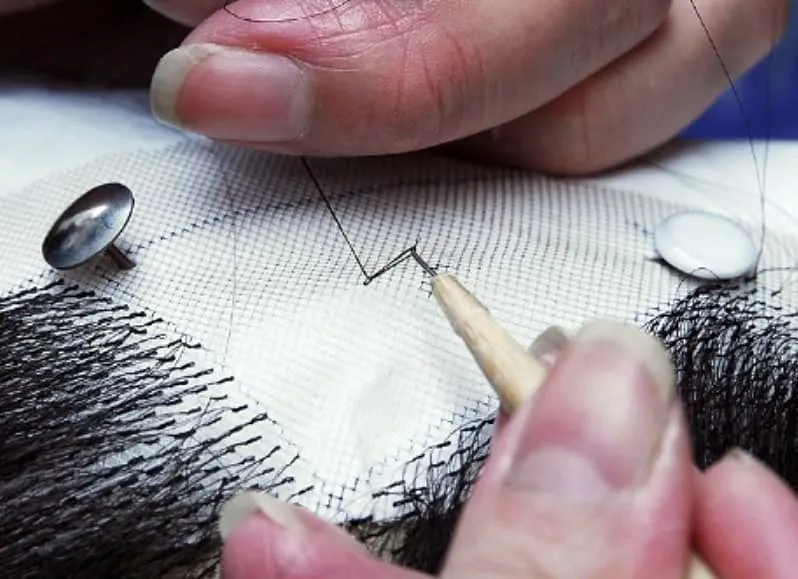
本店購買的假髮，回店清潔、手工修理
限本店購買的真髮或日本進口科技絲假髮、髮片：回店清潔保養、手工修理。
了解更多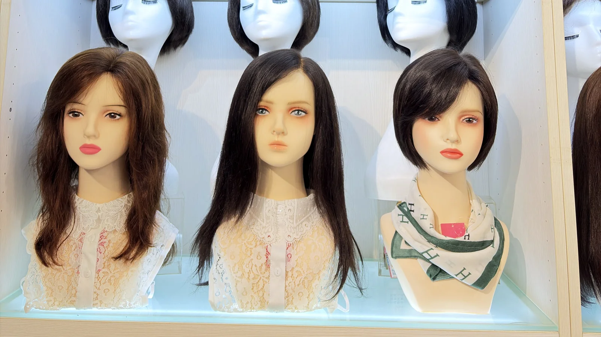
HOW TO VISIT
第一次來不用緊張，照著四個步驟就好。
LINE @995uevgh 或來電 02-2552-6562。週日公休。
現場百款假髮可試戴，比較材質與髮型，家人也歡迎陪同。
材質與款式由設計師當面說明。現成款可當天戴走；訂製款約需 3–4 個月。
本店購買的真髮或日本進口科技絲假髮，可回店清潔保養、手工修理。
不用憑照片想像，現場一頂一頂試戴比較，家人也歡迎陪同。
設計師現場做頭模，約 10–20 分鐘，用電腦記錄頭型資料，下次再做不用重量；再手工製作，約需 3–4 個月。
由設計師賈斯汀（Justin）聽你的需求，從挑選、調整到修剪。
IN THE SALON
現場百款假髮可試戴，家人也歡迎陪同。
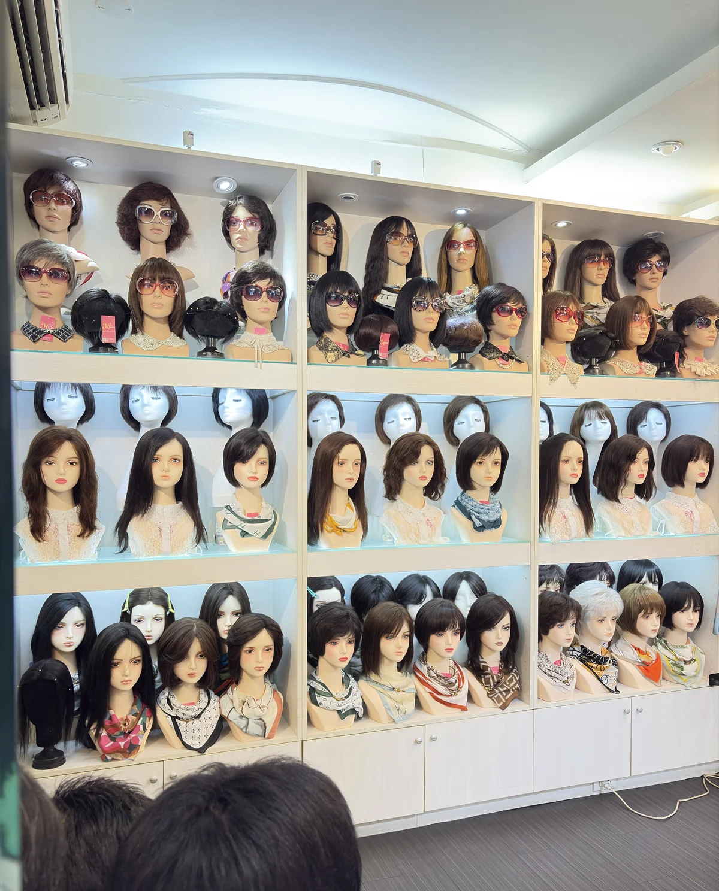
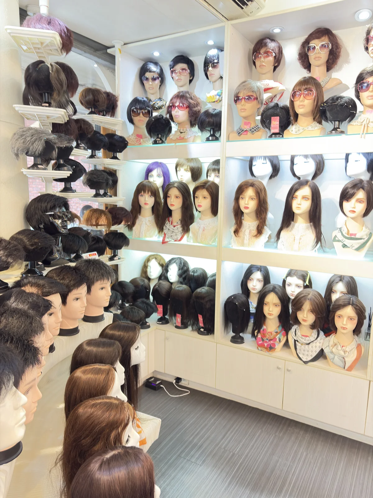
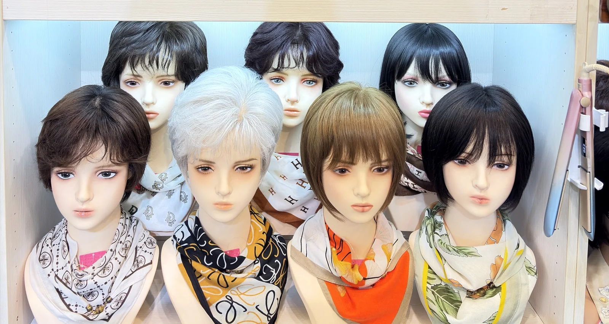
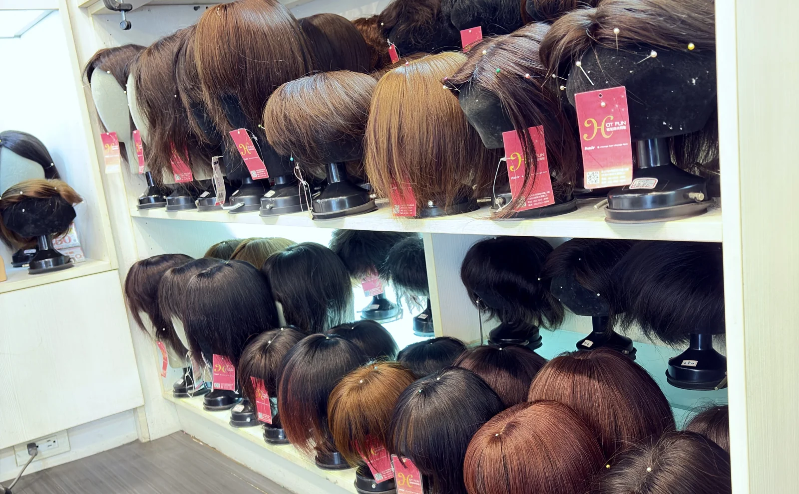
讓假髮，一點都不「假」。設計師一對一，修剪成自然的髮流
建議先預約。設計師一對一服務，可用 LINE @995uevgh 或來電 02-2552-6562。週日公休。
從台北地下街 Y13 出口搭電扶梯上來，穿過小公園約 30 秒就到，很近。地址是台北市大同區鄭州路23號（三角窗）。
可以。現場百款假髮可試戴比較材質與髮型，家人也歡迎陪同。
訂製款依頭型手工製作，約需 3–4 個月；現成款試戴滿意、修剪好，當天就能戴走。男士補髮是手工製作，需要時間。
可以。試戴時家人也歡迎陪同，幫你從旁邊和後面看。
Y15 出口是樓梯，從 Y15 上來，出來就是店門口。
停車場資訊以現場公告為準。
建議先預約，設計師一對一服務。